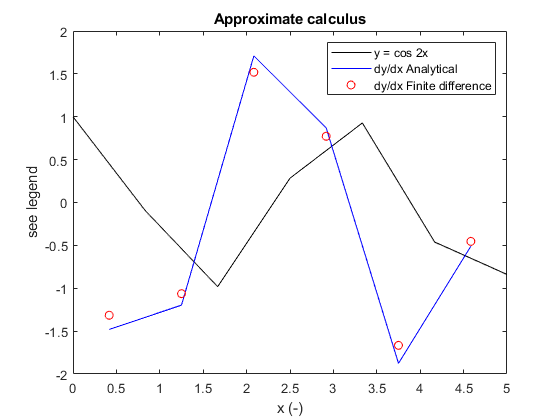
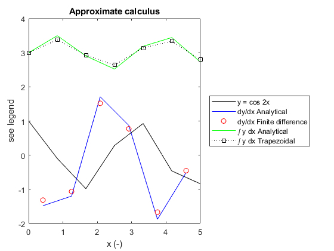

MATLAB Notes: Session 4 - Approximate methods for differentiation and integration
Simon Mathias
Department of Engineering
Durham University
Contents
- Learning outcomes
- Finite differences
- Approximating derivatives using finite differences
- Approximating derivatives using the diff command
- Trapezoidal rule and its relation to finite difference
- Approximating integrals using the trapezoidal rule
- Approximating integrals using the cumtrapz command
- Classroom assignment
Learning outcomes
At the end of the session you should be able to:
- Describe how derivatives can be approximated using finite differences.
- Approximate the derivative of a variable using diff.
- Show how finite differences link with trapezoidal integration.
- Approximate the integral of a variable using cumtrapz.
Finite differences
The basic idea about finite differences is as follows:
Consider a continuous function  .
.
Now consider a set of  number of discrete points along the
number of discrete points along the  axis
axis  .
.
The corresponding values of  can be written as
can be written as  .
.
Understand that  ,
,  and so on.
and so on.
An approximation of the derivative of with respect to can be obtained as follows:
 where
where  .
.
The value of the derivative corresponds to the location,  where
where  .
.
Note that calculus is often referred to as "infinitesimal calculus". The infinitesimal term refers to the focus on how changes over infinitesimal distances. A definition of a derivative can be written as follows:

Approximating derivatives using finite differences
Consider the trigonometric equation

Differentiating with respect to gives

Creat a new script file and type:
% Some examples demonstrating the principal of differentiation and % integration using finite differences and trapezoidal integration, % respectively.
at the top and save in an appropriate place.
First we will make a series of number of equally spaced points from zero to five using the linspace command (type "help linspace" in the Command Window to find out more). Following from this will calculate some corresponding values of (where  ).
).
%Define number of points for the discretisation of x N=7; x=linspace(0,5,N) %Calculate corresponding values of y y=cos(2*x)
x =
0 0.8333 1.6667 2.5000 3.3333 4.1667 5.0000
y =
1.0000 -0.0957 -0.9817 0.2837 0.9274 -0.4612 -0.8391
Now we will estimate the derivative using finite differences. Note that you can use end in the code to automatically identify the number of elements for a given dimension of an array of concern.
%Calculate the change in x, i.e. x(i)-x(i-1) dx=x(1,2:end)-x(1,1:end-1) %Calculate the change in y, i.e. y(i)-y(i-1) dy=y(1,2:end)-y(1,1:end-1) %Estimate the derivative with respect to x using finite difference dydxFD=dy./dx
dx =
0.8333 0.8333 0.8333 0.8333 0.8333 0.8333
dy =
-1.0957 -0.8860 1.2653 0.6437 -1.3886 -0.3779
dydxFD =
-1.3149 -1.0631 1.5184 0.7724 -1.6663 -0.4534
Interestingly, we have only six values of the derivative although we started with seven points. It is important to realise that these derivatives do not correspond directly to the points:

Rather they correspond to a different set of points:

of which there are only  in number.
in number.
As discussed earlier, it is possible to locate this latter set of points from
, where 
Add the following to your code:
%Calculate the locations at which the derivatives apply
xMP=(x(1,2:end)+x(1,1:end-1))/2
xMP =
0.4167 1.2500 2.0833 2.9167 3.7500 4.5833
Recall that we know the derivative is, in this case,  . So lets compare:
. So lets compare:
%Calculate derivative analytically at the xMP points
dydz=-2*sin(2*xMP)
dydz = -1.4804 -1.1969 1.7095 0.8697 -1.8760 -0.5105
Now lets make a plot to compare our results graphically
%Plot results figure(1) clf plot(x,y,'k',xMP,dydz,'b',xMP,dydxFD,'ro') legend('y = cos 2x','dy/dx Analytical','dy/dx Finite difference') xlabel('x (-)') ylabel('see legend') title('Approximate calculus')
The accuracy is quite poor because we are using only seven points for our discretisation. Try running your code again with 20 points.
Although using finite difference techniques to differentiate trigonometric functions seems slightly trivial, we are just using these as a demonstration. The main point to understand is that we can use similar code to approximate the derivative of any function of interest.
Approximating derivatives using the diff command
The diff command is a MATLAB command, which can be used to perform the above analysis in a computationally more efficient manner. Type "help diff" in the command window to find out more.
Note that diff(X,N,DIM), where X is the name of the array to be differenced, N is the number of times the array us to be differences, and DIM is the dimension of the array along which the differencing is to take place.
To aid our demonstration of diff, type the following 2D array in the command window:
A=[1 6 5 4 3 2; 5 6 4 4 2 1; 7 8 5 1 1 2]
A =
1 6 5 4 3 2
5 6 4 4 2 1
7 8 5 1 1 2
Now we are going to look at the difference between each column
A(:,2:end)-A(:,1:end-1)
ans =
5 -1 -1 -1 -1
1 -2 0 -2 -1
1 -3 -4 0 1
The diff command can be used to do exactly the same thing by typing:
diff(A,1,2)
ans =
5 -1 -1 -1 -1
1 -2 0 -2 -1
1 -3 -4 0 1
If instead we wanted to look at the difference between each row, we would type:
diff(A,1,1)
ans =
4 0 -1 0 -1 -1
2 2 1 -3 -1 1
If we wanted to look at the difference of each difference between each row, we would type:
diff(A,2,1)
ans =
-2 2 2 -3 0 2
Go back to your script file that you created and add the following code
dydxFD=diff(y,1,2)./diff(x,1,2)
dydxFD = -1.3149 -1.0631 1.5184 0.7724 -1.6663 -0.4534
Above we have calculated the derivative in one line. Note that the 1, in the diff argument, is because we are only taking one difference and the 2 is because we want to difference the columns as opposed to the rows. Recall that x and y are row vectors.
Trapezoidal rule and its relation to finite difference
Recall that integration is the reverse of differentiation. Whereas differentiation corresponds to finding the gradient of a line on a graph, integration corresponds to finding the area under a line.
A simple way to approximate an integral is to apply the so-called trapezoidal rule. Click on this link http://mathworld.wolfram.com/TrapezoidalRule.html TrapezoidalRule for an illustration.
Recalling that integration is the reverse of differentiation. Consider again the finite difference approximation
where
For convenience, let us say  such that
such that

It can also be said

Rearranging the finite difference equation above such that  is the subject of the formula we get
is the subject of the formula we get

In the same way that , it can also be said that  , from which it can be seen
, from which it can be seen

which is essentially a mathematical expression of the trapezoidal rule.
Approximating integrals using the trapezoidal rule
Consider again the trigonometric equation
Integrating with respect to gives

where  is an integration constant.
is an integration constant.
Let us now impose the constraint that  when
when  . It follows that
. It follows that  . Therefore
. Therefore

We now wish to approximate  using the trapezoidal rule.
using the trapezoidal rule.
From the previous discussion we can say that

To explore this further let us add the following code to our script file:
%Initialise a vector of zeros called Ftrapz Ftrapz=zeros(1,N); %Estimate the integral of y with respect to x using the trapezoidal rule for i=2:N Ftrapz(1,i)=(y(1,i)+y(1,i-1))/2*(x(1,i)-x(1,i-1))+Ftrapz(1,i-1); end %Display result in the command window disp(Ftrapz)
0 0.3768 -0.0721 -0.3630 0.1416 0.3359 -0.2059
Now lets add some code to compare the result to the analytical solution:
%Calculate values F using the analytical function from notes
F=3+sin(2*x)/2
F =
3.0000 3.4977 2.9047 2.5205 3.1871 3.4436 2.7280
Note that we also need to apply our constraint $ F(x=0)=3 $ to the trapezoidal integration result. This can be done as follows:
%Apply constraint to trapezoidal integration
Ftrapz=Ftrapz-Ftrapz(1,1)+3
Ftrapz =
3.0000 3.3768 2.9279 2.6370 3.1416 3.3359 2.7941
What we have done is subtracted the first value of Ftrapz, which corresponds to  in this case, from all the values of F. We have then added on the correct value at , which according to our constraint, is 3.
in this case, from all the values of F. We have then added on the correct value at , which according to our constraint, is 3.
%Plot results figure(1) hold on %Plot new results in figure(1) alongside previous results plot(x,F,'g',x,Ftrapz,'k:s') legend('y = cos 2x','dy/dx Analytical','dy/dx Finite difference',... '\int y dx Analytical','\int y dx Trapezoidal') legend('location','eastoutside')
Approximating integrals using the cumtrapz command
The cumtrapz command is a MATLAB command, which can be used to perform exactly the same analysis above in a computationally more efficient manner. Type "help cumtrapz" in the command window to find out more.
Note that cumtrapz(X,Y,DIM), where X is the name of the array to be integrated with respect to, Y is the array to be integrated, and DIM is the dimension of the array along which the integrating is to take place.
Add the following code to your script file to repeat the integration using cumtrapz:
%Use cumtrapz to integrate y with respect to x Fcumtrapz=cumtrapz(x,y,2); %Apply constraint Fcumtrapz=Fcumtrapz-Fcumtrapz(1,1)+3
Fcumtrapz =
3.0000 3.3768 2.9279 2.6370 3.1416 3.3359 2.7941
Classroom assignment
Make a new script file and write a subfunction to both differentiate and integrate a given set of dependent and independent variables using diff and cumtrapz (if one differentiates with respect to , and are known as the dependent and independent variables, respectively).
Then write some additional script to use your subfunction to both differentiate and integrate the following functions for  :
:
1) 
2) 
3) 
For each equation apply a constraint such that the integrals all equal 1 when .
Write further code to plot your results appropriately on a single figure with three subplots. Compare your results with analytical results where possible. You may find www.wolframalpha.com useful in this respect.
An example MATLAB code, containing all of the instructions requested above, is given in MATLABsession4_Assignment.m.